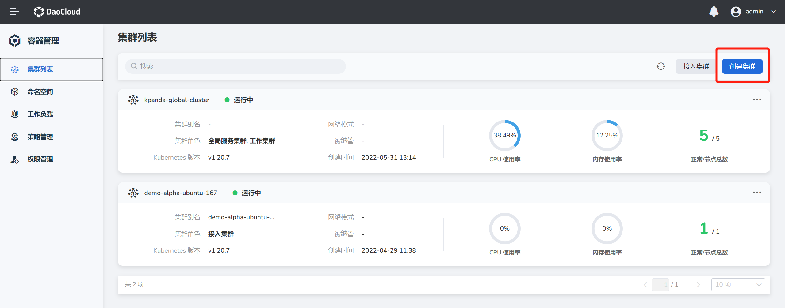

创建标准容器集群
Kubean 可以创建两种类型的集群，分别是标准容器集群和高弹性容器集群。用户可依据业务需要和使用场景进行选择。
本节介绍如何创建标准容器集群。有关高弹性容器集群的创建，请查看创建高弹性容器集群)。
前提条件
- 请参照集群创建前准备完成相应配置。
创建步骤
步骤一：选择集群类型
NS Editor 用户根据下表的信息成功登录后，在右上角点击集群列表->创建集群->部署标准容器引擎。
| 参数 | 说明 | 举例值 |
|---|---|---|
| UI 账户和密码 | 【类型】必填 【含义】用来登录容器管理平台 Web UI 的管理员账户和密码 |
账户：root 密码：** |
| 容器平台的 Web UI 地址 | 【类型】必填 【含义】容器管理平台的 Web UI 的 IP 地址 |
10.6.124.110 |

步骤二：配置集群基本信息
参照集群参数说明—基本信息，输入集群名称、被纳管的集群、容器运行时，Kubernetes 版本等基本信息。
步骤三：配置节点
配置节点信息前，需要预先将待添加节点的身份验证信息保持一致。
- 参照集群参数说明—节点配置，点击
新增节点按钮，依次输入主机名称、IP 地址、节点角色等信息。 - 选择通过秘钥或用户名/密码，配置节点的身份验证方式。如果选择秘钥认证，支持通过本地上传私钥。
- 选择是否启用 NTP 时间同步器，如果选择开启，在 NTP 服务器下拉选项中，选择合适的 NTP 服务器。
步骤四：配置网络
您可以根据业务需要配置合适的网络模式。目前容器管理模块支持 Calico、Cillium、Multus（Calico+Spiderpool+Macvlan)、Multus ( Calico+Spiderpoll+Spiderflat)、公有云 CNI 或者 None（系统默认的网络模式）。本节将以 Calico 为例介绍如何进行网络配置。有关网络模式的更多说明，请参阅集群参数说明—网络配置。
- 参照集群参数说明—网络配置，选择网络模式为
Calico。 - 配置 Calico 隧道，支持如下四种隧道模式。
- IPv4 IPIP CrossSubnet
- IPv4 IPIP
- IPv4 VXLAN
- IPv4 VXLAN CrossSubnet
- 配置 Calico IPtables 后端
- nft
- auto
- legacy
- 配置 Pod 和服务的 IP 地址范围。需要注意的是，Pod IP 地址范围一旦确定，在集群创建完成后不可更改。Pod 地址段和 Service 地址段不可重复。更多详情，请参阅 Kubernetes 集群网络规划。
- 选择是否启用节点本地 DNS 域名解析服务。
- 配置网络模式部署失败的参数。
- 配置网络模式部署失败的参数。
- 选择基于 Iptable 或 IPVS 的 kube-proxy 转发模式，有关 Iptables 和 IPVS 的区别，请查阅 kube-proxy。
- 选择是否开启虚拟 IP（VIP）。如果开启，在下面的选项中输入虚拟 IP 的地址，如10.70124.0。
步骤五：配置插件
容器管理模块为新创建的集群提供了一些常用插件的预置安装，以此进一步扩展集群的能力。您可以在创建集群时，指定集群需要预装的插件。其中 Insight 为系统默认安装的插件，为集群的健康运行状态提供能力扩展。您还可以选择预装 Local Path Provisioner、Hwameistor、Contour 等插件。有关更多详情，请参阅集群参数说明—插件配置。
步骤六：配置高级选项
您可以根据业务需要，参照集群参数说明—高级配置，配置新建集群的最大 Pod 数等参数。同时也支持通过新增按钮，输入自定义的集群安装参数。
完成集群创建
完成上述六个步骤的配置后，系统就会自动开始创建集群。您可以选择留在当前页面等待集群创建完成，在此期间您可以查看集群创建的实时进度。您也可以点击返回集群列表按钮，回到集群列表页面，等待集群创建完成。